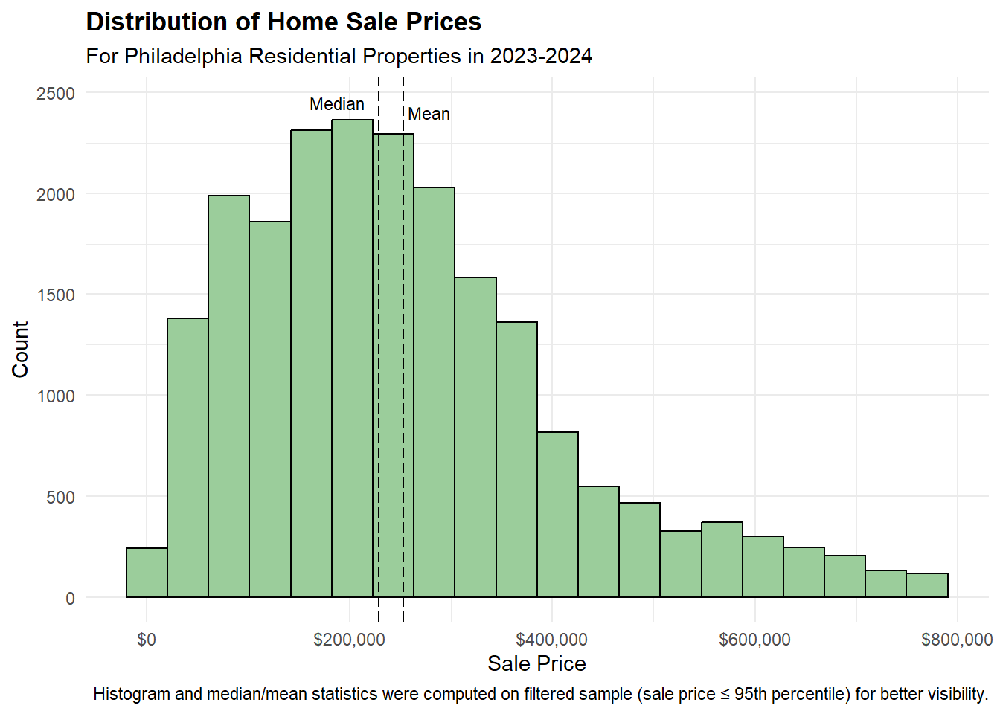
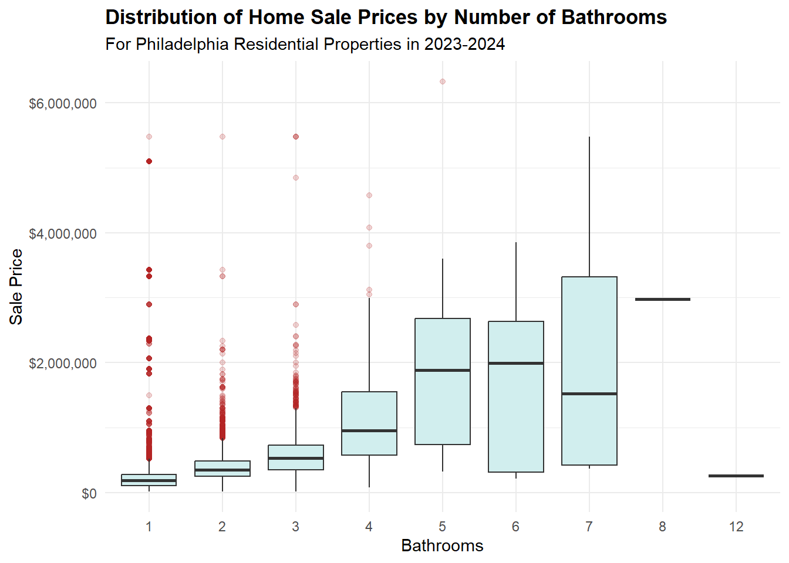
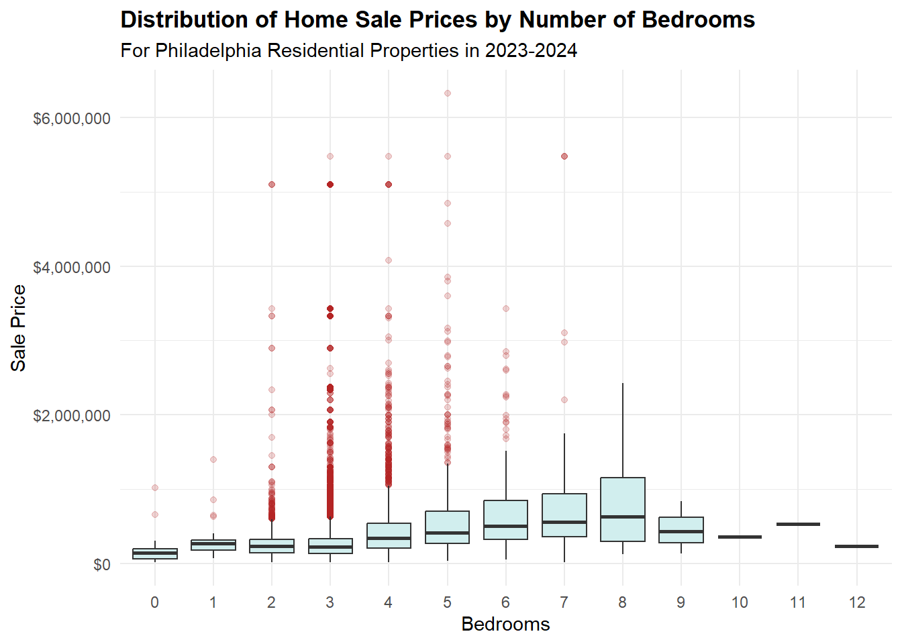
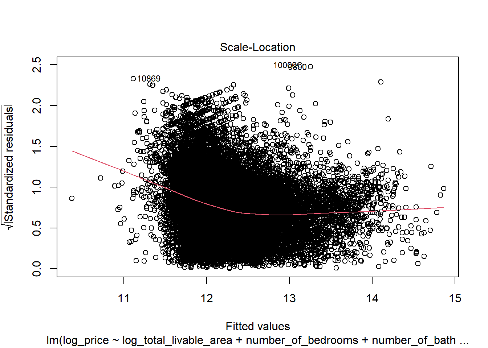
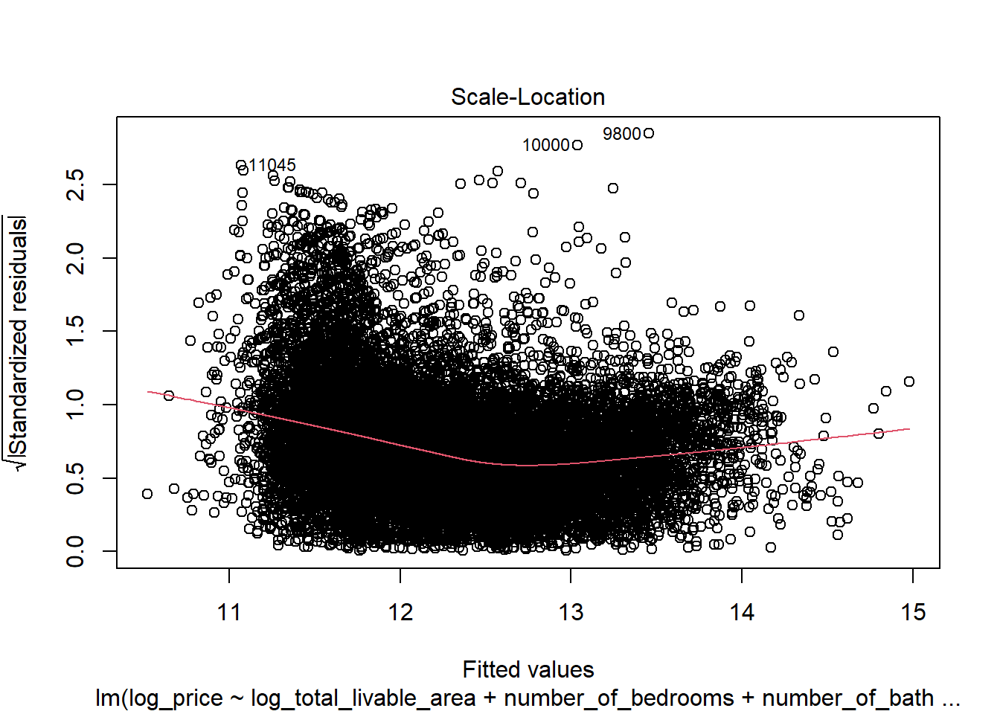

Warning: package 'tidycensus' was built under R version 4.3.3
Warning: package 'tidyverse' was built under R version 4.3.3
── Attaching core tidyverse packages ──────────────────────── tidyverse 2.0.0 ──
✔ dplyr 1.1.3 ✔ readr 2.1.4
✔ forcats 1.0.0 ✔ stringr 1.5.1
✔ ggplot2 4.0.0 ✔ tibble 3.2.1
✔ lubridate 1.9.3 ✔ tidyr 1.3.0
✔ purrr 1.0.2
── Conflicts ────────────────────────────────────────── tidyverse_conflicts() ──
✖ dplyr::filter() masks stats::filter()
✖ dplyr::lag() masks stats::lag()
ℹ Use the conflicted package (<http://conflicted.r-lib.org/>) to force all conflicts to become errors
Attaching package: 'scales'
The following object is masked from 'package:purrr':
discard
The following object is masked from 'package:readr':
col_factor
Warning: package 'sf' was built under R version 4.3.3
Linking to GEOS 3.11.2, GDAL 3.8.2, PROJ 9.3.1; sf_use_s2() is TRUE
To enable caching of data, set `options(tigris_use_cache = TRUE)`
in your R script or .Rprofile.
here() starts at C:/Users/Tim Wen/Documents/GitHub/portfolio-setup-wenshaoting6-ui
Data (c) OpenStreetMap contributors, ODbL 1.0. https://www.openstreetmap.org/copyright.
Check the package website, https://docs.ropensci.org/osmextract/, for more details.
Warning: package 'spatstat.geom' was built under R version 4.3.3
Loading required package: spatstat.data
Warning: package 'spatstat.data' was built under R version 4.3.3
Loading required package: spatstat.univar
Warning: package 'spatstat.univar' was built under R version 4.3.3
spatstat.univar 3.1-2
spatstat.geom 3.3-6
Attaching package: 'spatstat.geom'
The following object is masked from 'package:patchwork':
area
The following object is masked from 'package:scales':
rescale
Warning: package 'spatstat' was built under R version 4.3.3
Loading required package: spatstat.random
Warning: package 'spatstat.random' was built under R version 4.3.3
Warning: package 'spatstat.linnet' was built under R version 4.3.3
spatstat.linnet 3.2-5
spatstat 3.3-2
For an introduction to spatstat, type 'beginner'
Warning: package 'terra' was built under R version 4.3.3
terra 1.7.83
Attaching package: 'terra'
The following objects are masked from 'package:spatstat.geom':
area, delaunay, is.empty, rescale, rotate, shift, where.max,
where.min
The following object is masked from 'package:patchwork':
area
The following object is masked from 'package:tigris':
blocks
The following object is masked from 'package:scales':
rescale
The following object is masked from 'package:knitr':
spin
The following object is masked from 'package:tidyr':
extract
Attaching package: 'jsonlite'
The following object is masked from 'package:purrr':
flatten
Warning: package 'FNN' was built under R version 4.3.3
Please cite as:
Hlavac, Marek (2022). stargazer: Well-Formatted Regression and Summary Statistics Tables.
R package version 5.2.3. https://CRAN.R-project.org/package=stargazer
Warning: package 'car' was built under R version 4.3.3
Loading required package: carData
Warning: package 'carData' was built under R version 4.3.3
Attaching package: 'car'
The following object is masked from 'package:spatstat.model':
bc
The following object is masked from 'package:spatstat.geom':
ellipse
The following object is masked from 'package:dplyr':
recode
The following object is masked from 'package:purrr':
some
Warning: package 'lmtest' was built under R version 4.3.3
Loading required package: zoo
Attaching package: 'zoo'
The following object is masked from 'package:terra':
time<-
The following objects are masked from 'package:base':
as.Date, as.Date.numeric
phl_sales_clean <- phl_sales_res_23_24 |>filter(# Some sale_price are unrealistically too low ($0, $1 etc.) sale_price >=10000,# Exclude homes with 0 bathrooms number_of_bathrooms >0,# Some areas are unrealistically low (0, 1, etc.) total_area >1,# Some 0's remain in total_liveable_area after first area filter total_livable_area >0,# Filter our unrealistic year built year_built >=1750 )
Handle missing values
Code
# Check how many features have NA values# sum(is.na(phl_sales_clean$number_of_bedrooms))# sum(is.na(phl_sales_clean$number_of_bathrooms))# sum(is.na(phl_sales_clean$total_livable_area))# sum(is.na(phl_sales_clean$year_built))# Remove the 2 observations with NA values for number of bedroomsphl_sales_clean <- phl_sales_clean |>filter(!is.na(number_of_bedrooms) )
Preliminary Feature Engineering: Age = sale date - year built
Our methodology for cleaning the Philadelphia home sales data is to focus on the features used in our model. As a group, we decided on the following independent variables to consider in our data exploration and model building to be: number of bathrooms, number of bedrooms, total livable area, and year built. We recognize that there is some risk of collinearity between these structural features, which will later be monitored and addressed if needed in the model building stage. Additionally, we also had to clean the sales price column since this is the variable we aim to predict in our model.
Filter for only residential properties & sales made in 2023-24 (per instructions).
Filter for realistic sales price >= $10,000.
Filter for houses with at least 1 bathroom. We will keep observations where number of bedrooms = 0 as this likely signifies a studio apartment. However, it is not feasible for homes to have zero bathrooms, so we will enforce a constraint that a home must have at least 1 bathroom to preserve data integrity.
Filter for realistic total area > 1 sq ft & realistic total livable area > 0 sq ft.
Filter for year built >= 1750 (some homes were built in year 0).
Handle missing values: We removed any missing values in our dependent variable of sales price, since it is crucial we have a true and accurate measure for prediction. We also checked which of our predictor variables had NA values after filtering. Only number of bedrooms had 2 remaining NA values. The rest had no NA values. To remedy this, we will remove the 2 observations from our data. Note, if there was substantial missing values in our predictors, we could use strategies such as imputing the NA values with the mean or median to use when building our model.
Preliminary feature engineering: Rather than using year built in our Automated Valuation Model, it makes more sense to create a new variable age that is equal to the sale date minus the year built. The age variable is often easier to interpret in exploratory plots with the newer houses appearing on the left and older ones on the right. This is primarily a stylistic preference: the overall pattern of the data will remain the same but mirrored.
1.2 Load Secondary Data
Census
Purpose: Pull demographic and housing data at the census tract level for Philadelphia from the 2023 5-year ACS. This data will provide predictors for neighborhood characteristics in our modeling.
Variables Collected:
Median household income (B19013)
Percentage of family households (B11001)
Education attainment: percent of population 25+ with a bachelor’s degree or higher (B15003)
Housing vacancy rate (B25002)
Racial composition: percent white (B02001)
Load Philly Census Data from Previously Retrieved Files
Code
# Relative to project rootcensus_path <-here("data", "Philly Census")census_csv_path <-file.path(census_path, "philly_tract_metrics.csv")census_shp_path <-file.path(census_path, "philly_tract.shp")# Csv with census tract Geo IDs and metricsphilly_censustract <-read_csv(census_csv_path, show_col_types =FALSE)# Shp File including geometryphilly_tract_sf <-st_read(census_shp_path, quiet =TRUE)
median_income pct_white pct_bachelors pct_vacant
Min. : 13721 Min. : 0.000 Min. : 1.504 Min. : 0.000
1st Qu.: 42469 1st Qu.: 8.826 1st Qu.:16.094 1st Qu.: 5.366
Median : 60817 Median :34.740 Median :28.426 Median : 8.516
Mean : 66877 Mean :37.944 Mean :36.325 Mean : 9.844
3rd Qu.: 85298 3rd Qu.:64.202 3rd Qu.:55.345 3rd Qu.: 12.801
Max. :192727 Max. :95.513 Max. :96.632 Max. :100.000
NA's :27 NA's :17 NA's :17 NA's :19
A quick check of the census variables reveals some missing values and lower than epected values in median income. We will note this information but retain the missing values for now to maintain the full pitcure of census blocks.
Cleaning Methodology (Census)
Median income: Selected only the estimate column and renamed it for clarity.
Household composition: Pivoted ACS table to wide format, then calculated total households and family households.
Education: Pivoted to wide format, summed relevant categories to compute percent of population with a bachelor’s degree or higher.
Vacancy: Pivoted to wide format, calculated percent of homes vacant (vacant_units / total_units * 100).
Racial composition: Pivoted to wide format, computed percent white.
Merging: Combined all datasets by GEOID to create a single dataframe philly_blockgroup with all variables.
Geometry: Pulled census tract shapefiles with ACS geometry and merged with philly_blockgroup to create philly_bg_map.
Neighborhood (Polygon)
Reading in Philadelphia Neighborhoods as a shp object. This will allow us to aggregate data on neighborhoods to identify catagorical metrics.
Simple feature collection with 6 features and 5 fields
Geometry type: POLYGON
Dimension: XY
Bounding box: xmin: -75.23049 ymin: 39.98491 xmax: -75.0156 ymax: 40.11269
Geodetic CRS: WGS 84
NAME LISTNAME MAPNAME Shape_Leng Shape_Area
1 BRIDESBURG Bridesburg Bridesburg 27814.55 44586264
2 BUSTLETON Bustleton Bustleton 48868.46 114050424
3 CEDARBROOK Cedarbrook Cedarbrook 20021.42 24871745
4 CHESTNUT_HILL Chestnut Hill Chestnut Hill 56394.30 79664975
5 EAST_FALLS East Falls East Falls 27400.78 40576888
6 MOUNT_AIRY_EAST Mount Airy, East East Mount Airy 28845.55 43152470
geometry
1 POLYGON ((-75.06773 40.0054...
2 POLYGON ((-75.0156 40.09487...
3 POLYGON ((-75.18848 40.0727...
4 POLYGON ((-75.21221 40.0860...
5 POLYGON ((-75.18476 40.0282...
6 POLYGON ((-75.18087 40.0432...
Commercial and office points of interests (Amenities)(alternative in the next section if you do not want to download pbf data)
Code
# downloading osm data from geofabrik:https://download.geofabrik.de/north-america/us-northeast.html#input_pbf <- "the pdf file downloaded from the link above"# get boundary of Philadelphia Countypa_counties <-counties(state ="PA", year =2023)# Filter to Philadelphia Countyphilly_boundary <-subset(pa_counties, NAME =="Philadelphia")# read the full OSM PBF (you can select layer types like points, lines, polygons)poi <-oe_read(input_pbf, boundary = philly_boundary, boundary_type ="clipsrc", layer ="points") # or "lines" / "multipolygons"keywords <-c("shop","amenity","office","historic","tourism","healthcare","building","leisure")pattern <-paste0(keywords, collapse ="|")# ==== Filter by 'other_tags' ====if ("other_tags"%in%names(poi)) { poi$other_tags <-iconv(as.character(poi$other_tags), from ="", to ="UTF-8", sub ="") poi$other_tags[is.na(poi$other_tags)] <-"" poi_filtered <- poi %>%filter(grepl(pattern, other_tags, ignore.case =TRUE))cat("filtered POIs found:", nrow(poi_filtered), "of", nrow(poi), "\n")}
Alternative: filtered POI if you donot want to download osm data
Reading layer `philadelphia_poi_filtered' from data source
`C:\Users\Tim Wen\Documents\GitHub\portfolio-setup-wenshaoting6-ui\data\filtered poi\philadelphia_poi_filtered.shp'
using driver `ESRI Shapefile'
Simple feature collection with 11161 features and 10 fields
Geometry type: POINT
Dimension: XY
Bounding box: xmin: -75.27472 ymin: 39.87383 xmax: -74.95777 ymax: 40.13445
Geodetic CRS: WGS 84
Kernel Density Rasters (Economic activities density)
Instead of using distance to CBD, we extracted commercial and office points of interests from OpenStreetMap (OSM), and we opreate a Kernel Density Estimation (KDE) with a bandwidth of 300 meters. By doing that, we manage to get a surface of density of economic activities across the whole city. The higher the KDE value is, the more economic activities it will be, implying a higher likelyhood of the area as a city centers.
There are several benefits using this approach compared to distance to CBD. First, with the development of suburbanization, even within the context of Philadelphia County, there is still a shift from monocentric model to polycentric model, meaning there multiple centers/subcenters. Using one CBD fail to capture these subcenters, which may also influence housing price. Second, CBD is an area rather than a point, distance method fail to capture this while the continuous surface computed by KDE would have a value of economic activities across the whole city.
Code
# get boundary of Philadelphia Countypa_counties <-counties(state ="PA", year =2023)# Filter to Philadelphia Countyphilly_boundary <-subset(pa_counties, NAME =="Philadelphia")philly_boundary <-st_transform(philly_boundary, 2272) poi <-st_transform(poi, 2272)# ==== Prepare point pattern ====# Convert sf points to spatstat ppp objectwin <-as.owin(st_union(philly_boundary)) # window from county boundarycoords <-st_coordinates(poi)pp <-ppp(x = coords[,1], y = coords[,2], window = win)
Warning: data contain duplicated points
Code
# ==== Run Kernel Density Estimation ====# Sigma = bandwidth in map units (here, meters)density_map <-density.ppp(pp, sigma =300*3.28084, edge =TRUE, at ="pixels",eps =c(100, 100))# ==== Convert to raster ====r_Economic <-rast(density_map)crs(r_Economic) <-st_crs(philly_boundary)$proj4stringr_Economic <-mask(r_Economic, vect(philly_boundary))
Education
We used two datasets from OpenDataPhilly.com to identify schools geolocation and populated the metrics off Attendance percent and Withdrawal volumes from those schools.
Code
# Relative to project rooteducation_path <-here("data", "Education")education_csv_path <-file.path(education_path, "philadelphia_schools.csv")education_shp_path <-file.path(education_path, "Schools Shape", "Schools.shp")# Csv with School Names and metricsphilly_schools <-read_csv(education_csv_path, show_col_types =FALSE)# Shp File including geometryphilly_schools_sf <-st_read(education_shp_path, quiet =TRUE)
We joined the csv file containing the metrics with the shp file containing geoloaction.
Code
# Joining Schools csv metrics to shp file. Joined on 'location_i' (shp) and 'School_code (csv)# Keeping metrics for Attendance and Withdrawals# Select relevant metrics from CSVschool_metrics <- philly_schools %>%select(School_code, Attendance, Withdrawals) %>%mutate(School_code =as.character(School_code))philly_schools_sf <- philly_schools_sf %>%left_join(school_metrics,by =c("location_i"="School_code"))
Once joined, we dropped rows that did not have values in Attendance and Withdrawal. This resulted in 204 public schools and their metrics located in Philadelphia City Limits.
###Tree density Location of trees data was extracted from Opendata Philly. A Kernel Density Estimation was used to estimate the density of trees. The higher the value is, the more trees there will be in this (and surronding) cell
Reading layer `ppr_tree_inventory_2024' from data source
`C:\Users\Tim Wen\Documents\GitHub\portfolio-setup-wenshaoting6-ui\data\ppr_tree_inventory_2024\ppr_tree_inventory_2024.shp'
using driver `ESRI Shapefile'
Simple feature collection with 151713 features and 6 fields
Geometry type: POINT
Dimension: XY
Bounding box: xmin: -8380434 ymin: 4847791 xmax: -8344373 ymax: 4885938
Projected CRS: WGS 84 / Pseudo-Mercator
Code
trees=st_transform(trees,2272)# Convert sf points to spatstat ppp objectcoords_trees <-st_coordinates(trees)pp_trees <-ppp(x = coords_trees[,1], y = coords_trees[,2], window = win)
Warning: 355 points were rejected as lying outside the specified window
Warning: data contain duplicated points
Code
# ==== Run Kernel Density Estimation ====# Sigma = bandwidth in map units (here, meters)density_map_trees <-density.ppp(pp_trees, edge =TRUE, at ="pixels",eps =c(100, 100))# ==== Convert to raster ====r_trees <-rast(density_map_trees)crs(r_trees) <-st_crs(philly_boundary)$proj4stringr_trees <-mask(r_trees, vect(philly_boundary)) # mask to county boundary
Joining data together
First, since commercial and office POI and trees are point data, and the more they cluster the higher the housing price will be. As a result, we use Kernel Density method to estimate the density of them. Value of the cell was assign to the point (housing prices), if the point falls within it.
Second, as census tracts and neighborhood are polygon data, a st_within spatial join was used to join them with housing data. Values from polygon data will assign to the points when points fall within it.
Code
# Geometry - Cenus Data Mergephilly_tract_sf$GEOID=as.numeric(philly_tract_sf$GEOID)philly_tract_map <- philly_tract_sf %>%left_join(philly_censustract, by ="GEOID")#convert housing prices data into point dataphl_sales_clean_sf = phl_sales_clean%>%mutate(geometry =st_as_sfc(shape)) %>%# parse WKT into geometryst_as_sf(crs =2272) #convert and match the crsphilly_schools_sf_clean=philly_schools_sf_clean%>%st_transform(2272)philly_neighborhoods=philly_neighborhoods%>%st_transform(2272)philly_tract_map=philly_tract_map%>%st_transform(2272)#merge them togetherphl_sales_clean_sf_final=phl_sales_clean_sf%>%st_join(philly_tract_map,join=st_within)%>%st_join(philly_neighborhoods,join = st_within)phl_sales_clean_sf_final <-st_transform(phl_sales_clean_sf_final, crs =st_crs(r_trees))phl_sales_clean_sf_final$EconKDE <- raster::extract(r_Economic,phl_sales_clean_sf_final)phl_sales_clean_sf_final$TreeKDE <- raster::extract(r_trees, phl_sales_clean_sf_final) phl_sales_clean_sf_final=phl_sales_clean_sf_final%>%st_transform(2272)
Summary table before and after dimensions
Code
before_after_summary <-data.frame(Stage =c("Raw Data", "After Residential Filter (2023–24)", "After Removing Errors & NAs", "After Spatial Joins & Final Cleaning"),Rows =c(nrow(phl_sales),nrow(phl_sales_res_23_24),nrow(phl_sales_clean),nrow(phl_sales_clean_sf_final)),Columns =c(ncol(phl_sales),ncol(phl_sales_res_23_24),ncol(phl_sales_clean),ncol(phl_sales_clean_sf_final)))knitr::kable(before_after_summary, caption ="Data dimensions before and after cleaning")
Warning: 'xfun::attr()' is deprecated.
Use 'xfun::attr2()' instead.
See help("Deprecated")
Warning: 'xfun::attr()' is deprecated.
Use 'xfun::attr2()' instead.
See help("Deprecated")
Data dimensions before and after cleaning
Stage
Rows
Columns
Raw Data
583802
79
After Residential Filter (2023–24)
34628
79
After Removing Errors & NAs
22131
81
After Spatial Joins & Final Cleaning
22131
106
PHASE 2: EXPLORATORY DATA ANALYSIS
Distribution of sale prices (histogram)
Code
# Calculate the median / mean to plotprice_median <-median(phl_sales_clean$sale_price, na.rm =TRUE)ggplot(phl_sales_clean, aes(sale_price)) +geom_histogram(bins =60, fill ="darkseagreen3", color ="black") +geom_vline(xintercept = price_median, linetype =5) +annotate("text",x = price_median, y =6300, label ="Median",hjust =-0.2, color ="black", size =3) +scale_x_continuous(labels =label_dollar()) +labs(title ="Distribution of Home Sale Prices",subtitle ="For Philadelphia Residential Properties in 2023-2024",x ="Sale Price",y ="Count") +theme_minimal() +theme(plot.title =element_text(face ="bold") )
Interpretation: The histogram plot above shows the full distribution of home sale prices for residential properties in 2023-2024 from our cleaned dataset. The data is extremely right-skewed, highlighting a majority of prices under $500,000 with a long tail of more expensive homes thereafter. The main issue with the extreme outliers of home prices exceeding $5 million that make the visibility of this plot hard to interpret. Also, there are major gaps at higher sales prices as we see the data become more spread out, further indicating the presence of outliers. Therefore, to remedy this, we will plot a second histogram of the price distribution, excluding the top 5% of sales prices from the original cleaned dataset.
Code
# Create new df, filtering out the top 5% of house prices (outliers)price_95_perc <-quantile(phl_sales_clean$sale_price, 0.95, na.rm =TRUE)df_95_exclude <-filter(phl_sales_clean, sale_price <= price_95_perc)# Calculate the median / mean to plot from trimmed distributionprice_median_95_exc <-median(df_95_exclude$sale_price, na.rm =TRUE)price_mean_95_exc <-mean(df_95_exclude$sale_price, na.rm =TRUE)ggplot(df_95_exclude, aes(sale_price)) +geom_histogram(bins =20, fill ="darkseagreen3", color ="black") +geom_vline(xintercept = price_mean_95_exc, linetype =5) +geom_vline(xintercept = price_median_95_exc, linetype =5) +annotate("text",x = price_mean_95_exc,y =2400,label ="Mean", hjust =-0.1, color ="black", size =3) +annotate("text",x = price_median_95_exc, y =2450, label ="Median",hjust =1.25, color ="black", size =3) +scale_x_continuous(labels =label_dollar()) +labs(title ="Distribution of Home Sale Prices",subtitle ="For Philadelphia Residential Properties in 2023-2024",caption ="Histogram and median/mean statistics were computed on filtered sample (sale price ≤ 95th percentile) for better visibility.",x ="Sale Price",y ="Count") +theme_minimal() +theme(plot.title =element_text(face ="bold") )

Interpretation: In this revised histogram, we get a much better sense of how the sales prices are distributed without the presence of extreme outliers. As we saw before, the data is definitely right-skewed since the median ($235,250) is less than the mean ($322,231) even when removing large outliers from the top 5% of the distribution. We can visualize that the standard housing market in Philadelphia from 2023-2024 ranges between $0 and $800,000. The distribution has a single peak around $200,000, indicating that it is unimodal with a typical (or most common) home sale price in the realm of $150,000 to $250,000. This is an indication that it may be best to omit these significant outliers from our dataset when building our model for home sale price prediction. The homes on the higher end of the sale price distribution are determined by a combination of structural features (such total livable area) and spatial features (such as nearby city centers) that drive up the prices of these homes. The goal of this study is to determine what features, both structural and spatial, are significant in predicting home sale prices in Philadelphia and create an accurate model to help policy makers in valuating property tax assessments.
Geographic distribution of sales price by tract
Code
library(tmap)
Warning: package 'tmap' was built under R version 4.3.3
price_map <-tm_shape(philly_price_map) +tm_polygons(col ="median_price",style ="quantile",n =5,palette ="YlGnBu",title ="Median Sale Price (≤ 95th Percentile)" ) +tm_layout(main.title ="Median Home Sale Prices by Census Tract (Filtered to ≤ 95th Percentile)",main.title.position ="center",main.title.fontface ="bold",outer.margins =c(0.10, 0.02, 0.02, 0.02),legend.outside =TRUE ) +tm_shape(df_95_exclude_sf) +tm_dots(col ="gray30",alpha =0.3,size =0.02,legend.show =FALSE )
── tmap v3 code detected ───────────────────────────────────────────────────────
[v3->v4] `tm_polygons()`: instead of `style = "quantile"`, use fill.scale =
`tm_scale_intervals()`.
ℹ Migrate the argument(s) 'style', 'n', 'palette' (rename to 'values') to
'tm_scale_intervals(<HERE>)'[v3->v4] `tm_polygons()`: use 'fill' for the fill color of polygons/symbols
(instead of 'col'), and 'col' for the outlines (instead of 'border.col').[v3->v4] `tm_polygons()`: migrate the argument(s) related to the legend of the
visual variable `fill` namely 'title' to 'fill.legend = tm_legend(<HERE>)'[v3->v4] `tm_layout()`: use `tm_title()` instead of `tm_layout(main.title = )`[v3->v4] `tm_dots()`: use `fill_alpha` instead of `alpha`.[v3->v4] `tm_dots()`: use `fill.legend = tm_legend_hide()` instead of
`legend.show = FALSE`.[tm_dots()] Argument `legend.show` unknown.
Code
price_map
[cols4all] color palettes: use palettes from the R package cols4all. Run
`cols4all::c4a_gui()` to explore them. The old palette name "YlGnBu" is named
"brewer.yl_gn_bu"
Multiple palettes called "yl_gn_bu" found: "brewer.yl_gn_bu", "matplotlib.yl_gn_bu". The first one, "brewer.yl_gn_bu", is returned.
[plot mode] fit legend/component: Some legend items or map compoments do not
fit well, and are therefore rescaled.
ℹ Set the tmap option `component.autoscale = FALSE` to disable rescaling.
Interpretation:
This visualization shows clear spatial clustering of home prices in Philadelphia when looking at the typical market excluding outliers. Higher median prices are concentrated in Center City, University City, and select neighborhoods in South Philadelphia and Northwest Philadelphia. This supports our need to include additional predictors to account amenity density and economic activity.
Distribution of median income by neighborhood
Code
census_points <-st_centroid(philly_tract_map)
Warning: st_centroid assumes attributes are constant over geometries
neighborhood_income_map <-tm_shape(philly_neighborhood_income) +tm_polygons(col ="mean_income",style ="quantile",n =5,palette ="YlOrRd",title ="Median Household Income" ) +tm_layout(main.title ="Median Household Income by Neighborhood",main.title.position ="center",outer.margins =c(0.10, 0.02, 0.02, 0.02), # <-- more top paddinglegend.outside =TRUE )
── tmap v3 code detected ───────────────────────────────────────────────────────
[v3->v4] `tm_polygons()`: instead of `style = "quantile"`, use fill.scale =
`tm_scale_intervals()`.
ℹ Migrate the argument(s) 'style', 'n', 'palette' (rename to 'values') to
'tm_scale_intervals(<HERE>)'[v3->v4] `tm_polygons()`: migrate the argument(s) related to the legend of the
visual variable `fill` namely 'title' to 'fill.legend = tm_legend(<HERE>)'[v3->v4] `tm_layout()`: use `tm_title()` instead of `tm_layout(main.title = )`
Code
neighborhood_income_map
[cols4all] color palettes: use palettes from the R package cols4all. Run
`cols4all::c4a_gui()` to explore them. The old palette name "YlOrRd" is named
"brewer.yl_or_rd"
Multiple palettes called "yl_or_rd" found: "brewer.yl_or_rd", "matplotlib.yl_or_rd". The first one, "brewer.yl_or_rd", is returned.
[plot mode] fit legend/component: Some legend items or map compoments do not
fit well, and are therefore rescaled.
ℹ Set the tmap option `component.autoscale = FALSE` to disable rescaling.
Interpretation:
In this visualization depicting median incomes of residents by neighborhoods, we observe continued spatial clustering of wealth indicators in areas like Center City, Northwest Philadelphia, and South Philadlephia. This is consistent with the basic aggregation of home sale prices on census tracts. The presence of high income in tandem with high housing cost serves as an indication of their relationship and justifies the use of economic predictors in our model. With this spatial auto-correlation, it is important that the model absorbs spatial variation by utilizing additional spatial features.
Price vs. structural features
1. Number of Bathrooms
Code
ggplot(phl_sales_clean, aes(x =factor(number_of_bathrooms), y = sale_price)) +geom_boxplot(fill ="lightcyan2", outlier.color ="firebrick", outlier.alpha =0.2) +scale_y_continuous(labels = scales::label_dollar()) +labs(title ="Distribution of Home Sale Prices by Number of Bathrooms", subtitle ="For Philadelphia Residential Properties in 2023-2024",x ="Bathrooms", y ="Sale Price") +theme_minimal() +theme(plot.title =element_text(face ="bold") )

Interpretation: Since number of bathrooms is a discrete variable, a scatter plot is not suitable to visualize this predictor’s relationship with the target variable of sale price; therefore, we opted to use box plots instead. In this first plot, we see a distinct positive relationship between number of bathrooms and home sale price. Intuitively, this makes sense since homes with more bathrooms should on average sell at higher prices. Another trend is that there are more outliers in homes with less bathrooms (between 1 and 3). These outliers are likely due to external spatial factors such as neighborhoods. Housing prices tend to surge in highly desirable neighborhoods such as Rittenhouse Square, which explains the presence of many outliers plotted above the upper bound of these boxplots. Another trend is that variance of sale prices begins to significantly widen for homes with more than 3 bedrooms. This suggests that larger homes with more bathrooms experience more price dispersion relative to those with less bathrooms. Lastly, it is worth noting that there are very few observations of homes with 8 or 12 bathrooms, indicating that it would be beneficial to remove them from our dataset to better capture the true relationship between price and number of bathrooms.
Code
ggplot(phl_sales_clean, aes(x =factor(number_of_bathrooms), y =log(sale_price))) +geom_boxplot(fill ="lightcyan2", outlier.color ="firebrick", outlier.alpha =0.2) +scale_y_continuous(labels = scales::label_dollar()) +labs(title ="Distribution of Log(Home Sale Prices) by Number of Bathrooms", subtitle ="For Philadelphia Residential Properties in 2023-2024",x ="Bathrooms", y ="Log(Sale Price)") +theme_minimal() +theme(plot.title =element_text(face ="bold") )
Interpretation: In addition, we also plotted with the y-axis transformed to the log of sales price. We notice that there is still a positive relationship that appears more linear than the first plot. The log transformation helps reduce the effect of extreme outliers by compressing the distribution of house sale prices. This transformation also serves to center the distributions as noted by the presence of both positive and negative outliers. These benefits suggest that log-transforming our target variable for a linear regression is the best suitable method to yield an accurate model.
2. Number of Bedrooms
Code
ggplot(phl_sales_clean, aes(x =factor(number_of_bedrooms), y = sale_price)) +geom_boxplot(fill ="lightcyan2", outlier.color ="firebrick", outlier.alpha =0.2) +scale_y_continuous(labels = scales::label_dollar()) +labs(title ="Distribution of Home Sale Prices by Number of Bedrooms", subtitle ="For Philadelphia Residential Properties in 2023-2024",x ="Bedrooms", y ="Sale Price") +theme_minimal() +theme(plot.title =element_text(face ="bold") )

Interpretation: The above plot to measure the relationship between home sale price and number of bedrooms is positive, indicating that homes with more bedrooms tend to sell at higher prices. However, this relationship looks significantly less strong than the relationship between sale price and number of bathrooms. We observe many outliers across homes with various bedroom sizes, most notably those with 2 - 5 bedrooms. The intuition is that these size households are more likely to be sold on the market with higher variability in sales prices, particularly in the upper tail, demonstrating right-skew. These high outliers represent luxury properties that sell for abnormally high sale prices due to other external variables like neighborhood, size etc. Again, we have a small number of very large homes with 10, 11, and 12 bedrooms that are candidates for removal before building our model.
Code
ggplot(phl_sales_clean, aes(x =factor(number_of_bedrooms), y =log(sale_price))) +geom_boxplot(fill ="lightcyan2", outlier.color ="firebrick", outlier.alpha =0.2) +scale_y_continuous(labels = scales::label_dollar()) +labs(title ="Distribution of Log(Home Sale Prices) by Number of Bedrooms", subtitle ="For Philadelphia Residential Properties in 2023-2024",x ="Bedrooms", y ="Log(Sale Price)") +theme_minimal() +theme(plot.title =element_text(face ="bold") )
Interpretation: As before, we can log-transform the target variable log(sale price) to better visualize the relationship with number of bedrooms. We still see a positive relationship that appears more linear than in our earlier plot. As before, the log-transformation stabilizes the variance to mitigate outliers and centers the data demonstrated by outliers at both the upper and lower tails. The strength of the relationship still appears to be not as obvious as with the number of bathrooms. In other words, number of bathrooms may be a more suitable predictor of sale price from these EDA observations. To avoid the risk of multicollinearity, we will keep this finding in mind when determining what structural features should be included in our final model.
3. Total Livable Area
Code
ggplot(phl_sales_clean, aes(x = total_livable_area, sale_price)) +geom_point(alpha =0.1, size =1) +geom_smooth(method ="lm", se =FALSE, linetype =5, color ="firebrick") +scale_y_continuous(labels =label_dollar()) +labs(title ="Distribution of Home Sale Prices by Total Livable Area", subtitle ="For Philadelphia Residential Properties in 2023-2024",x ="Total Livable Area", y ="Sale Price") +theme_minimal() +theme(plot.title =element_text(face ="bold") )
`geom_smooth()` using formula = 'y ~ x'
Interpretation: The plot represents the relationship between the non-transformed target sale price and predictor total livable area. We can see that the relationship to be positive with evidence of heavy right-skew with the majority of data points clustered in the bottom-left with less than 3000 sq ft of area and $500,000 price. Also, we notice that although the relationship is positive, it does not appear to be linear, a violation of a crucial assumption in linear regression. As before, there is the presence of luxury homes as large outliers that can pull the regression line upward, which would create biased estimates on model coefficients.
Code
ggplot(phl_sales_clean, aes(x =log(total_livable_area), log(sale_price))) +geom_point(alpha =0.075, size =1) +geom_smooth(method ="lm", se =FALSE, linetype =5, color ="firebrick") +scale_y_continuous(labels =label_dollar()) +labs(title ="Distribution of Log(Home Sale Prices) by Total Livable Area", subtitle ="For Philadelphia Residential Properties in 2023-2024",x ="Log(Total Livable Area)", y ="Log(Sale Price)") +theme_minimal() +theme(plot.title =element_text(face ="bold") )
`geom_smooth()` using formula = 'y ~ x'
Interpretation: By log-transforming both sale price and total livable area, we visualize a relationship that appears much more linear. As we saw before, there seem to be more variability in homes with smaller areas that are more common in this dataset. The transformation has more of a uniform, symmetric spread of points above and below the regression line. We can interpret this relationship as increasing the percentage of total livable area will lead to some constant increase in the percentage of sale price with this transformation. We should keep at mind that the non-constant variance is alarming for potential heteroskedasticity in our model. Again, through the log-transformation of our target variable, we observe a more linear relationship, strengthening the notion for the need for this transformation in our modeling phase.
4. Age (Sale Date - Year Built)
Code
ggplot(phl_sales_clean, aes(x = age, y = sale_price)) +geom_point(alpha =0.076, size =1) +scale_y_continuous(labels =label_dollar()) +labs(title ="Distribution of Home Sale Prices by Age", subtitle ="For Philadelphia Residential Properties in 2023-2024",x ="Age", y ="Sale Price") +theme_minimal() +theme(plot.title =element_text(face ="bold") )
Interpretation: In the above plot, it does not reveal any significant relationship between sale price and home age. The main issue is that most of the data is clustered at the bottom of the figure at low sale prices regardless of age. There are some noticeable outliers along with increased variability for middle-aged homes around 75 to 125 years old. In general, it seems that there newer homes (lower age) demonstrate somewhat higher price levels on average. However, from this plot alone, it is difficult to verify.
Code
ggplot(phl_sales_clean, aes(x = age, log(sale_price))) +geom_point(alpha =0.075, size =1) +geom_smooth(method ="loess", span =0.75, se =FALSE, color ="firebrick") +scale_y_continuous(labels =label_dollar()) +labs(title ="Distribution of Log(Home Sale Prices) by Age", subtitle ="For Philadelphia Residential Properties in 2023-2024",x ="Age", y ="Log(Sale Price)") +theme_minimal() +theme(plot.title =element_text(face ="bold") )
`geom_smooth()` using formula = 'y ~ x'
Interpretation: After doing the trick to log-transform sale price, we see an interesting shape that somewhat resembles a crucial theory we learned in lecture. This theory outlines that Age has a U-shaped effect on price. Newer homes are sought after due to recent construction with more modern amenities, whereas very old homes are considered to have historic value or charm. The middle-aged homes are therefore the least desirable homes that likely are not modernized with significant wear and tear without the allure of a historic home. While this theory makes sense, it somewhat breaks down for these middle aged homes as their sale prices experience much more variability, which would make our model more at risk of heteroskedasticity. This is likely due to a majority of samples in our dataset within this range whose sale price cannot be explained by age alone. Therefore, it is wise to proceed with caution with using the age variable in building our predictive model.
Code
df_age_groups <- phl_sales_clean |>mutate(age_group =case_when( age <20~"New (<20 years)", age <80~"Middle (20–80 years)", age >=80~"Historic (>80 years)" ),age_group =factor(age_group, levels =c("New (<20 years)", "Middle (20–80 years)", "Historic (>80 years)")) )ggplot(df_age_groups, aes(age_group, log(sale_price))) +geom_boxplot(fill ="lightcyan2", outlier.colour ="firebrick", outlier.alpha =0.2) +labs(title ="Distribution of Log(Sale Price) by Age Group",subtitle ="Philadelphia Residential Sales in 2023–2024",x ="Age Group", y ="log(Sale Price)", ) +theme_minimal() +theme(plot.title =element_text(face ="bold") )
Interpretation: When we engineer a new age group feature, the U-shaped distribution does not appear to be valid in the case of our dataset. Using the age segmentations defined in class, it now appears as there is an inverse (negative) relationship between log(sale price) and age group, not a U-shape distribution. One hypothesis is that very old buildings in Philadelphia are too worn down or don’t hold enough historic value to counteract its age. Whatever the reason may be, it seems that engineering a feature for age group is preferred over using age directly and to expect increasing age to a home to depreciate its value over time.
Price vs. spatial features
Code
ggplot(phl_sales_clean_sf_final, aes(x = EconKDE$lyr.1, y=sale_price)) +geom_point(alpha =0.1, size =1) +geom_smooth(method ="lm", se =FALSE, linetype =5, color ="firebrick") +scale_y_continuous(labels =label_dollar()) +labs(title ="Distribution of Home Sale Prices by Economic KDE Value", subtitle ="For Philadelphia Residential Properties in 2023-2024",x ="KDE", y ="Sale Price") +theme_minimal() +theme(plot.title =element_text(face ="bold") )
`geom_smooth()` using formula = 'y ~ x'
Warning: Removed 3 rows containing non-finite outside the scale range
(`stat_smooth()`).
Warning: Removed 3 rows containing missing values or values outside the scale range
(`geom_point()`).
Interpretation: The plot represents the relationship between the non-transformed target sale price and predictor KDE for economic activities. We can see that the relationship to be positive with evidence of heavy right-skew with the majority of data points clustered in the bottom-left with less than a KDE value of 0.000075 and $500,000 price. Also, we notice that although the relationship is positive, it does not appear to be linear, a violation of a crucial assumption in linear regression. It seems that the trend increases first till about 0.00008 and then decreases. As before, there is the presence of some homes as large outliers that can pull the regression line upward, which would create biased estimates on model coefficients.
One creative visualization: Sale Price Distribution Across City
Code
#join sales data with neighborhood dataphilly_sales_neigh <-st_join(philly_neighborhoods, phl_sales_clean_sf_final, join = st_contains)# Summarize count of sales per neighborhoodphilly_sales_count <- philly_sales_neigh %>%group_by(NAME) %>%summarize(sales_count =n(),.groups ="drop" )# Plotggplot(philly_sales_count) +geom_sf(aes(fill = sales_count), color ="white", size =0.3) +scale_fill_viridis_c(option ="inferno",direction =-1,name ="Number of Sales",trans ="sqrt" ) +labs(title ="Number of Sales by Neighborhood (2023–2024)",subtitle ="Philadelphia County" ) +theme_void(base_size =14) +theme(plot.title =element_text(face ="bold", hjust =0.5),plot.subtitle =element_text(hjust =0.5),legend.position ="right",legend.key.height =unit(1.2, "cm") )
Interpretation: Based on the map the number of sales is not evenly distributed across neighborhoods in Philadelphia County. Some of the neighborhoods in the east/northeast have a significant large number of home sales while the number of that in the south is lower. Moreover, the Center City area seems to also have a smaller number of sales compared to others, highly due to fewer number of housing units.
PHASE 3: FEATURE ENGINEERING
Final Data Cleaning from Structural EDA
Code
# 99th percentile of sales prices to removeprice_99_perc <-quantile(phl_sales_clean$sale_price, 0.99, na.rm =TRUE)# Relevant columns to keep for modelingrel_columns <-c(# Location / Shape"census_tract", "shape", "location", "zip_code",# Target"sale_price", "log_price",# Regressors (and potential ones)"total_livable_area", "log_total_livable_area","number_of_bedrooms", "number_of_bathrooms","year_built", "age", "age_group","interior_condition", "quality_grade" )phl_sales_final <- phl_sales_clean |>filter(# Remove top 1% of sale price (extreme outliers)# This creates an upper bound of around $2 million rather than $6 million to further reduce outlier effects in modeling sale_price < price_99_perc,# Remove bathrooms > 7 number_of_bathrooms <8,# Remove bedrooms > 9 number_of_bedrooms <10 )|>mutate(# Log of sale pricelog_price =log(sale_price),# Log of total livable arealog_total_livable_area =log(total_livable_area),# Age group buckets (new, middle_age, historic)age_group =case_when( age <20~"New (<20)", age <=80~"Middle (20–80)", age >80~"Historic (>80)" ),# For modeling as dummy variablesage_group =factor(age_group, levels =c("New (<20)", "Middle (20–80)", "Historic (>80)")) ) |># Select relevant columnsselect(any_of(rel_columns))#convert housing prices data into point dataphl_sales_final_sf = phl_sales_final%>%mutate(geometry =st_as_sfc(shape)) %>%# parse WKT into geometryst_as_sf(crs =2272) #convert and match the crsphilly_schools_sf_final=philly_schools_sf_clean%>%st_transform(2272)philly_neighborhoods=philly_neighborhoods%>%st_transform(2272)philly_tract_map=philly_tract_map%>%st_transform(2272)#merge them togetherphl_sales_final_sf_final=phl_sales_final_sf%>%st_join(philly_tract_map,join=st_within)%>%st_join(philly_neighborhoods,join = st_within)phl_sales_final_sf_final <-st_transform(phl_sales_final_sf_final, crs =st_crs(r_trees))phl_sales_final_sf_final$EconKDE <- raster::extract(r_Economic,phl_sales_final_sf_final)phl_sales_final_sf_final$TreeKDE <- raster::extract(r_trees, phl_sales_final_sf_final) phl_sales_final_sf_final=phl_sales_final_sf_final%>%st_transform(2272)
Classifying Neighborhood
Code
#convert census tract into pointscensus_points=st_centroid(philly_tract_map)
Warning: st_centroid assumes attributes are constant over geometries
Code
points_joined <-st_join(census_points, philly_neighborhoods)# Calculate mean MHI for each polygonmean_mhi_by_poly <- points_joined %>%st_drop_geometry() %>%group_by(MAPNAME) %>%summarise(meanMHI =mean(median_income, na.rm =TRUE))# Join the result back to the polygon layerphl_sales_final_sf_final <- phl_sales_final_sf_final %>%left_join(mean_mhi_by_poly, by ="MAPNAME")%>%st_as_sf() # reclassify the neighborhood data based on quantile (25%)phl_sales_final_sf_final$MHI_quantile <-cut( phl_sales_final_sf_final$meanMHI,breaks =quantile( phl_sales_final_sf_final$meanMHI,probs =seq(0, 1, 0.25), na.rm =TRUE ),include.lowest =TRUE,labels =c("Q1 (lowest)", "Q2", "Q3", "Q4 (highest)"))
Calculating distance to schools using K-nearest method
Code
# Compute distance matrixdist_matrix <-st_distance(phl_sales_final_sf_final, philly_schools_sf_final)# Extract the 3 smallest distances for each pointnearest_3 <-apply(dist_matrix, 1, function(x) sort(x)[1:3])# Get the average or total distance if neededmean_nearest3 <-apply(dist_matrix, 1, function(x) mean(sort(x)[1:3]))phl_sales_final_sf_final$mean_3nn_dist <- mean_nearest3
Summary table
Code
#reformat raster data into a "readable" format by stargazerphl_sales_final_sf_final <- phl_sales_final_sf_final %>%mutate(EconKDE = EconKDE$lyr.1,TreeKDE = TreeKDE$lyr.1) #exclude the unnecessary datasummary_data <- phl_sales_final_sf_final %>%st_drop_geometry() %>%select(-c( census_tract, shape, NAME.x, NAME.y, MAPNAME, Shape_Area, Shape_Leng, location, zip_code, GEOID, variabl, age_group, quality_grade, LISTNAME, MHI_quantile, estimat,moe,pct_bch,pct_vcn,pct_wht,mdn_ncm,fmly_hh,totl_hh ))# Keep only numeric columnssummary_numeric <- summary_data %>%select(where(is.numeric))summary_numeric_df <-as.data.frame(summary_numeric)# Print as txt in Rstargazer(summary_numeric_df,type ="text",title ="Summary Statistics",digits =2,summary.stat =c("n", "mean", "sd", "min", "median", "max"),covariate.labels =c("Sale Price", "Log Price", "Total Livable Area", "Log Total Livable Area", "Bedrooms", "Bathrooms", "Year Built", "Age", "Interior Condition", "Median Income","Family HH", "Total HH", "% Bachelors", "% Vacant", "% White","Econ KDE", "Tree KDE", "Mean MHI", "Mean 3 closest School Dist"))
Summary Statistics
======================================================================================
Statistic N Mean St. Dev. Min Median Max
--------------------------------------------------------------------------------------
Sale Price 21,904 290,409.00 247,036.10 10,000 235,000 2,285,000
Log Price 21,904 12.29 0.81 9.21 12.37 14.64
Total Livable Area 21,904 1,365.48 537.62 434 1,216 9,038
Log Total Livable Area 21,904 7.16 0.31 6.07 7.10 9.11
Bedrooms 21,904 3.08 0.71 0 3 9
Bathrooms 21,904 1.43 0.68 1 1 7
Year Built 21,904 1,937.34 29.94 1,750 1,925 2,025
Age 21,904 86.16 29.94 -2 98 274
Interior Condition 21,903 3.42 0.90 1 4 7
Median Income 21,644 66,519.72 30,635.44 13,721 60,957 192,727
Family HH 21,902 1,096.04 435.24 0 1,054 2,484
Total HH 21,902 1,946.09 603.64 0 1,911 3,713
% Bachelors 21,899 32.43 22.74 1.50 26.41 94.84
% Vacant 21,897 9.32 5.94 0.00 8.15 32.88
% White 21,899 38.19 29.95 0.00 35.22 95.51
Econ KDE 21,901 0.0000 0.0000 0.00 0.0000 0.0000
Tree KDE 21,901 0.0000 0.0000 0.0000 0.0000 0.0001
Mean MHI 21,551 66,655.66 27,951.74 18,646.00 59,779.14 168,021.00
Mean 3 closest School Dist 21,902 2,601.60 1,193.24 336.99 2,365.72 11,109.39
--------------------------------------------------------------------------------------
We have used a number of methods to create spatial features in both Phase 1 and 3. First, in Phase 1, since commercial and office POI and trees are point data, and the more they cluster the higher the housing price will be. As a result, we use Kernel Density method to estimate the density of them. Value of the cell was assign to the point (housing prices), if the point falls within it.
Second, as census tracts and neighborhood are polygon data, a st_within spatial join was used to join them with housing data. Values from polygon data will assign to the points when points fall within it.
Third, as there are too many neighborhoods, it is hard to interpret the coefficient of them as it is a categorical variable. We reclassify it with four different categories based on quantile of MHI(25%). To calculate the MHI each neighborhood, we first take the centroid of each census tract and summarize them within each neighborhood. Then we take the mean of MHI of the tracts that fall within the neighborhood.
Lastly, different from poi and trees, a high cluster of schools may not reflect a high housing price. As a result, instead of using density estimation, we use 3-nearest distance and take the mean to capture some of the closest schools.
PHASE 4: Model Building
create train/test data first (make workflow smoother)
#run regression based on houses own characteristicoptions(scipen =999)model1=lm(log_price~log_total_livable_area+number_of_bedrooms+number_of_bathrooms+age+interior_condition+quality_grade,data=for_model_building)summary(model1)
studentized Breusch-Pagan test
data: model1
BP = 918.58, df = 23, p-value < 0.00000000000000022
Code
#p-value is way too small, implying more variables may be needed (make sense)#calculate the RMSEmodel_train_1 <-lm(log_price~log_total_livable_area+number_of_bedrooms+number_of_bathrooms+age+interior_condition+quality_grade,data = train_data)test_predictions_1 <-predict(model_train_1, newdata = test_data)rmse_test_1 <-sqrt(mean((test_data$log_price - test_predictions_1)^2,na.rm =TRUE))rmse_train_1 <-summary(model_train_1)$sigmaplot(model1)

In residual plot, more observations are clustered when fitted value is lower, indicating bad distribution of residuals and nonlinearity.
Same issue is reflected in Q-Q plot as well, the unlinearity revels the distribution of residual is not normal.
There is also heteroskedasticity, as the scale location shows, the line is not linear at all.
The outliers seems to have small influence on the leverage,as the line is almost linear shown in the last graph
#edu_attainment and mhi may have muticolinearitybptest(model2)
studentized Breusch-Pagan test
data: model2
BP = 1101.9, df = 28, p-value < 0.00000000000000022
Code
#p-value is way too small, implying more variables may be needed (make sense)#calculate the RMSEmodel_train_2 <-lm(log_price~log_total_livable_area+number_of_bedrooms+number_of_bathrooms+age+interior_condition+median_income+I(family_hh/total_hh)+pct_bachelors+pct_vacant+pct_white+quality_grade,data = train_data)test_predictions_2 <-predict(model_train_2, newdata = test_data)rmse_test_2 <-sqrt(mean((test_data$log_price - test_predictions_2)^2,na.rm =TRUE))rmse_train_2 <-summary(model_train_2)$sigmaplot(model2)

The residual plot for model 2 looks much better than that in model 1. The number of observations are clustered when fitted value is lower decreases, indicating better distribution of residuals. The non-linearity issue also gets better
Q-Q plot still does not look good, especially for the outliers. It seems that outliers is influencing the normality of residuals
There is also heteroskedasticity, as the scale location shows, the line is not linear at all.
The outlier seems to have small influence on the leverage,as the line is almost linear shown in the last graph
#very sure edu_attainment and mhi may have muticolinearity, make sense EconKDE and its squared term have high vif score as we are taking quadratic termbptest(model3)
studentized Breusch-Pagan test
data: model3
BP = 1163.6, df = 32, p-value < 0.00000000000000022
Code
#p-value is way too small, implying more variables may be needed #calculate the RMSEmodel_train_3 <-lm(log_price~log_total_livable_area+number_of_bedrooms+number_of_bathrooms+age+interior_condition+median_income+I(family_hh/total_hh)+pct_bachelors+pct_vacant+pct_white+EconKDE+I(EconKDE^2)+TreeKDE+mean_3nn_dist+quality_grade,data = train_data)test_predictions_3 <-predict(model_train_3, newdata = test_data)rmse_test_3 <-sqrt(mean((test_data$log_price - test_predictions_3)^2,na.rm =TRUE))rmse_train_3 <-summary(model_train_3)$sigmaplot(model3)
The residual plot for model 3 does not change that much compared to model 2. The majority of the issues remain the same
Model 4: add fixed variable and interaction terms into regression
#very sure edu_attainment and mhi may have muticolinearity#tree seems to be correlated with neighborhood (make sense)#make sense EconKDE and its squared term have high vif score as we are taking quadratic termbptest(model4)
studentized Breusch-Pagan test
data: model4
BP = 1217.3, df = 20, p-value < 0.00000000000000022
Code
#p-value is way too small, implying more variables may be needed #calculate the RMSEmodel_train_4 <-lm(log_price~log_total_livable_area+number_of_bedrooms+number_of_bathrooms+age+interior_condition+median_income+I(family_hh/total_hh)+pct_bachelors+pct_vacant+pct_white+EconKDE+I(EconKDE^2)+TreeKDE+mean_3nn_dist+MHI_quantile*age,data = train_data)test_predictions_4 <-predict(model_train_4, newdata = test_data)rmse_test_4 <-sqrt(mean((test_data$log_price - test_predictions_4)^2,na.rm =TRUE))rmse_train_4 <-summary(model_train_4)$sigmaplot(model4)
comparison table (RMSE, R² for 4 different models you constructed in your process)
Model Performance Summary
====================
Model RMSE Adj_R2
--------------------
Model 1 0.638 0.375
Model 2 0.503 0.604
Model 3 0.501 0.607
Model 4 0.490 0.635
--------------------
stargazer regression results
Code
stargazer(model1,model2,model3,model4,type ="text", #could be changed to text if neededtitle ="Model Results",dep.var.labels =c("Log of Sale Price"),covariate.labels =c("Log(Total Livable Area)","Number of Bedrooms","Number of Bathrooms","Building Age","Interior Condition","Median Household Income","Family Household Share (Family HH / Total HH)","% Bachelor's Degree Holders","% Vacant Housing Units","% White Population","Economic Density (EconKDE)","Economic Density² (EconKDE²)","Tree Density (TreeKDE)","Mean 3-Nearest Neighbor Distance" ),omit.stat =c("f", "ser"),digits =3)
Structural Features: - Log(Total Livable Area) (β = 0.509, p < 0.001): A 1% increase in total livable area is associated with a 0.509% increase in sale price, holding all other factors constant. This represents the strongest predictor in our model, indicating that size is the primary driver of housing value in Philadelphia.
Number of Bedrooms (β = 0.018, p < 0.001): Each additional bedroom is associated with approximately a 1.8% increase in sale price. This positive coefficient suggests that bedrooms add value, though the effect is modest compared to other structural features.
Number of Bathrooms (β = 0.151, p < 0.001): Each additional bathroom is associated with approximately a 16.3% increase in sale price. This substantial effect indicates that bathrooms are highly valued amenities in Philadelphia’s housing market, likely reflecting both functional utility and luxury appeal.
Building Age (β = -0.004, p < 0.001): Each additional year of building age is associated with approximately a 0.4% decrease in sale price. This suggests that newer homes command premium prices, reflecting depreciation over time and the value of modern amenities and construction standards.
Interior Condition (β = -0.164, p < 0.001): Each unit increase in interior condition rating (where higher numbers indicate worse condition) is associated with approximately a 17.9% decrease in sale price. This substantial effect demonstrates the critical importance of property condition in determining market value.
Neighborhood Demographics: - Median Household Income (β = 0.00000, p < 0.1): While statistically significant, the coefficient is extremely small, suggesting that tract-level median income has a minimal direct effect on individual property prices when controlling for other factors.
% Bachelor’s Degree Holders (β = 0.008, p < 0.001): A 1 percentage point increase in the proportion of residents with bachelor’s degrees is associated with approximately a 0.8% increase in sale price. This reflects the premium associated with highly educated neighborhoods or higher ability to pay for degree-holding buyers.
% Vacant Housing Units (β = -0.011, p < 0.001): A 1 percentage point increase in vacancy rate is associated with approximately a 1.1% decrease in sale price. This negative relationship reflects the detrimental effects of neighborhood blight and disinvestment on property values.
% White Population (β = 0.004, p < 0.001): A 1 percentage point increase in the white population share is associated with approximately a 0.4% increase in sale price. This coefficient likely captures both historical patterns of neighborhood investment and ongoing racial disparities in housing markets.
Spatial Features: - Economic Density (EconKDE) (β = -3,726.664, p < 0.001): The linear term shows a negative coefficient, suggesting that at low levels of economic activity, proximity to commercial areas may initially depress housing values, possibly due to noise, traffic, or other negative externalities.
Economic Density² (EconKDE²) (β = 26,476,926, p < 0.001): The positive quadratic term indicates that the relationship between economic density and housing prices is U-shaped. As economic activity increases beyond a certain threshold, the benefits of proximity to amenities, employment, and urban vibrancy begin to outweigh the costs, leading to premium pricing in highly commercial areas.
Mean 3-Nearest Neighbor Distance (β = 0.00002, p < 0.001): The positive coefficient suggests that properties located farther from their three nearest neighbors command slightly higher prices, possibly reflecting larger lot sizes or more exclusive locations.
Income Quantile Effects: - MHI_quantileQ2 (β = 0.136, p < 0.001): Properties in the second income quartile neighborhoods command approximately 14.6% higher prices than those in the lowest quartile, reflecting the premium associated with middle-income areas.
Age-Income Interactions: The positive interaction terms between age and higher income quantiles (Q2: β = 0.001, Q3: β = 0.003, Q4: β = 0.004) suggest that older homes retain more value in wealthier neighborhoods, likely due to better maintenance, historic preservation, or neighborhood character that offsets age-related depreciation.
The economic density relationship is particularly noteworthy—it demonstrates that Philadelphia’s housing market exhibits a complex spatial pattern where moderate commercial activity may initially depress values, but high-density commercial areas (like Center City) command significant premiums, reflecting the urban amenities premium that characterizes successful city centers.
The most important feature is I(EconKDE^2). It has the largest coefficient compared for all the other features. This reflects that being close to commercial activities is really important to housing prices. There is also a pattern that spatial features are important.
PHASE 6: Model Diagnostics
Diagnostic Plots for Best Model
Code
#generate diagnostic plotsplot(model4)
Residual Plot:
The Residuals vs Fitted plot shows mild heteroskedasticity and a small degree of curvature, which is expected in a dataset of this size, and the model performs consistently well across most of the fitted range with only a few isolated outliers.
QQ-Plot:
The Q-Q plot shows slight deviation from normality in the extreme tails, which is common in large real-world housing datasets, while the majority of residuals align closely with the theoretical normal distribution, indicating that model inference remains reliable.
Cook’s Distance Plot
Code
#identify influential observationscooks_d <-cooks.distance(model4)plot(cooks_d, type ="h", main ="Cook's Distance",ylab ="Cook's Distance", xlab ="Observation")abline(h =4/nrow(for_model_building), col ="red", lty =2)
The Cook’s Distance plot shows that while a few observations exert relatively higher influence on the regression model, the vast majority of cases have negligible influence, and no single data point appears to unduly distort the model’s estimated coefficients.
PHASE 7: Conclusions & Recommendations
Our final model’s is able to explain 64% of the variation on logged house prices in Philadelphia, with an average error of 48.31%. Our residuals mostly fall along the Q-Q plot’s line and are homoscadestic (as seen in the Scale-Location plot), meaning that the residuals both fall on a normal distribution and the variance of residuals is consistent across all independent variable values. Our K-folds analysis returned an R2 of .65 (higher than the model’s original .64), illustrating our model’s efficacy with non-test data. The feature that matters most is the economic density around the examined housing unit, as it first has a positive relationship with housing price and then has a negative relationship.
Hardest neighborhoods to predict are the most affluent areas — as the social connotations of these spaces are both largely influential in housing prices as well as unquantifiable. Becuase of historical underdevelopment and the history of how that is tied to both race and class, housing prices are intrinsically tied to these vulnerable groups. A model that predicts housing prices is also convincing developers to focus on already well-to-do neighborhoods, whether it be when building housing or commercial centers. There are pros and cons to this, as it may protect neighborhoods from gentrification, but it could also exclude them from capital infusions and access to goods/services. Our model is limited in numerous ways, one of which is the inability to quantify power of word of mouth. For example, once the general vibe around a neighborhood — such as Fishtown — changes from working class (or from another marginalized group) to “up and coming” or “hip”, future housing prices in the area may radically change. Another limitation is the non-incorporation of Philadelphia’s future plans. For example, if the Roosevelt Boulevard extension was to begin construction, then our model would be unable to predict the change in housing price until the stations were built and the local impacts began.